Welcome Berry Best Friend!
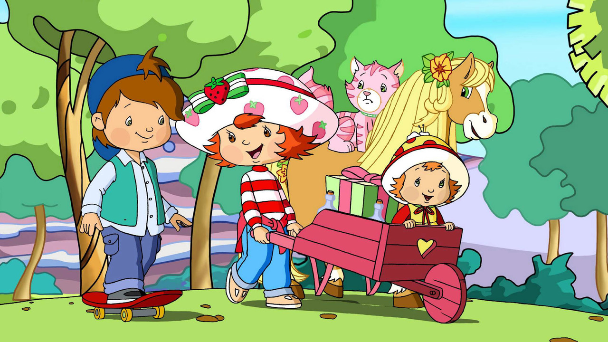
Round up of Strawberry Shortcake
Strawberry Shortcake spends her days tending to a field of Berry Patches and going on adventures. Strawberry has a pet cat called Custard who is quite the negative nancy, she has a snarky attutite expesional when it comes to Strawberrys other pet Pupcake. StrawberryLand is strawberry's world, and we're all just living in it. She manages to make at least one new friend every special. Strawberries style has a more gender-nuteral look and she is great at playing sports and having tea parties.
Characters
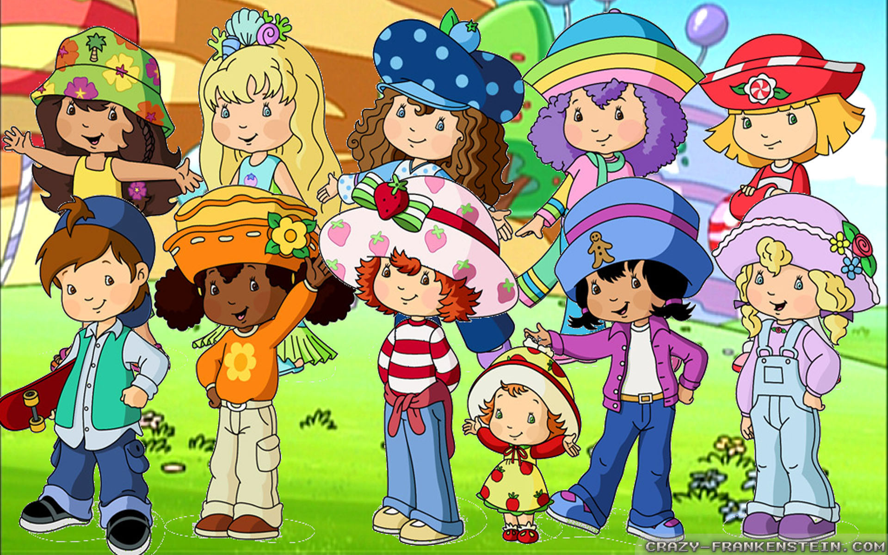
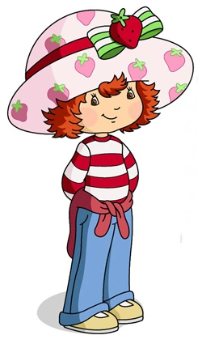 |
Strawberry Shortcake - Strawberry Shortcake is a sweet but spunky little redhead with enough optimism to fill a strawberry field. She really believes things are growing better all the time. She puts her heart and soul into seeing that things improve for everyone she meets. Strawberry is also quite adventurous, so it's no surprise that she has friends from other lands both near and far. Strawberry Shortcake is athletic and enjoys playing sports or riding horses, and is a creative baker at the same time. She also likes gardening, which is why there are a handful of large strawberries around her house. She generally is a tomboy who is usually outside, but every once in awhile enjoys dressing up or pretending to be a princess. She loves her sister and not failing to share equal love towards both her pets. She is also a intelligent girl who can quickly find the right solution whenever a problem arises. She's also curious, eager to try something new, go to a place completely new for her, and make friends with a full stranger. |
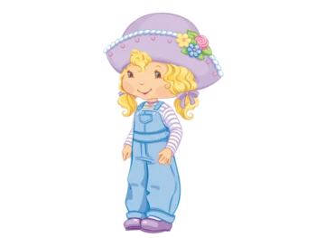 |
Angel Cake - Angel Cake was portrayed as a dainty normal but persnickety girl. She is generally kind and friendly to others. She is also very polite and values table manners. But she is also very well known for being bossy and stubborn and has quick mood changes. One of her most notable personality traits is being a perfectionist and wanting everything to go the way she'd like it, especially when it comes to baking and decorating cakes, as well as playing games and sports. When things don't go absolutely flawless, she becomes frustrated, and she can even lose her temper and lash out at others if things really aren't going well. She tends to snap out with a sharp tongue when annoyed. She often gets overly competitive because of her desire to show off. She is very artistic. |
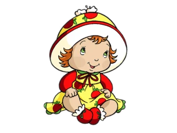 |
Apple Dumplin' - Apple Dumplin' was Strawberry Shortcake's younger sister and had a pet duck named Apple Ducklin'. She is still a "baby" character but seems to be a bit older than 1980s, being more like a toddler, as she walked and talked more in 2003. During seasons 1-2, she was a baby who spoke in few words and phrases from time to time. During season 3, Apple could then speak in full simple sentences, with minor grammatical errors indicating that she'd most likely grown a bit since the series premiere. She was a lot smaller than Strawberry and was usually seen sitting down. pple Dumplin' was a generally a happy and enthusiastic baby. She constantly giggled and was often affectionate with Strawberry and her friends. However, she would cry and get discouraged if something went wrong or if she let someone down. |
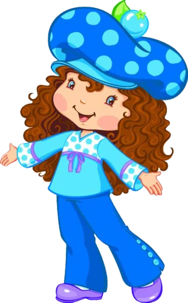 |
Blueberry Muffin - Blueberry Muffin bakes the most delicious muffins in Strawberryland. Because she loves reading stories, her over-active imagination often runs away with her. She frequently exaggerates and uses big words and dramatic phrases. But she’s also a lot of fun and thinks up the best make-believe games. Blueberry’s muffin-shaped cabin is in Blueberry Valley, a peaceful place surrounded by wild blueberry bushes. Blueberry is normally mature and smartest girl of the group, Blueberry is knowledgeable about almost everything. She spends so much time with books that she always knows exactly what others need, or where the specific topic they need will be located in her bookstore. She is whole lot of knowledge and very well-mannered, which can confuse her friends since they struggle to understand her in some way. |
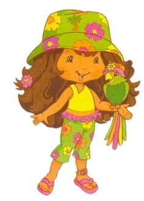 |
Coco Calypso - Coco Calypso was first introduced in the episode, The Mystery of Seaberry Beach, in which she was a far away friend of Strawberry Shortcake and enlisted Strawberry's help because her seaberry harvests are stolen. In the end it turned out to be a misunderstanding between her and neighbor Seaberry Delight, who she gains a crush on. Her pet is a parrot called Papaya |
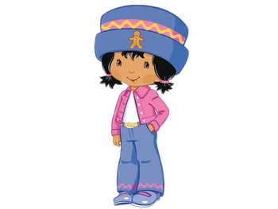 |
Ginger Snap - Ginger Snap is known for is being hyperactive, energetic and having a "motor mouth", or having a tendency to talk very fast and chatter. She is usually kind and friendly to others but doesn't have a lot of patience. She is scared or frightened easily, especially of the dark, shown in "Ginger Snap's No Light Night of Fright" and "The Blueberry Beast." She often overreacts and gets loud if she's ever scared, mad, worried, or annoyed, which shows she does not handle stress well. She says she eats lots of chocolate when she feels upset or stressed. In "Strawberry's Big Journey", she states she hates sitting still for a long time. She is an intelligent mechanic and inventor. Her machines have many purposes. She can create a machine from scratch, anywhere, without being in her factory, as seen in "Get Well Adventure". She claims to always see the glass as half full, showing that she is an optimistic person. |
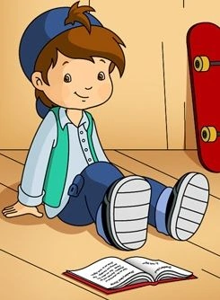 |
Huckleberry Pie - Huckleberry Pie tries very hard to get things done or be liked by others. While he does learn to just be himself, he can't help but try brand new things in hopes of making more friends or learning to bond. Due to his love of animals (mainly dogs) and his career in mind, it's implied he has an easier time just being himself with animals best, as well as possibly hint that he grew up rather lonely. Despite being surrounded by girls, Huckleberry doesn't seem to mind their girly activities and does/tries everything with a non-judgmental mind. He cares deeply for the berry bunch and is usually-always in an upbeat mood. He also knows how to have a good time, even if he's kinda klutzy. While Huck may come off really goofy he takes very serious care of everything he holds closely and he will do whatever he can to pay you back if you help him in any shape or form. |
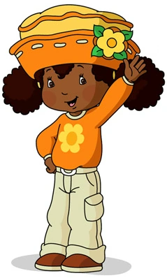 |
Orange Blossom - Orange Blossom is a girl with a handful to offer literally. She's usually a happy girl who loves to smile and make others do the same. Rarely ever is she selfish, as she believes that as long as others feel happy, then she'll be happy too. She is somewhat sensitive and most likely the first to begin to pout and act grumpy when she is not happy. She also happens to be one of the easier girls to upset and quick to burst into tears, though she is always thoughtful enough to supply more handkerchiefs. When she cries, it is usually out of pure sensitivity and not whiny. She's shy and has a hard time speaking up when she disagrees with something. She can let people just walk all over her and doesn't often stand up for herself as much as she will stand up for her friends. Orange Blossom is gentle to animals and plants, and described as a 'friend of the earth'. She cares deeply about taking care of our planet. Out of all the girls, Orange seems to be the bravest. This may be due to her reckless mood, in which she rushes into situations head-first not considering the consequences. She can also be very stubborn about things once her mind has been set on them, but not as stubborn as Angel Cake. She wants to prove her worth; This makes it hard for her to admit when she needs help or may be afraid. Despite general downsides to her behavior, Orange is a true friend who will help others the berry best she can. |
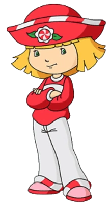 |
Peppermint Fizz - Peppermint Fizz is a determined-but-stubborn character who will do almost anything to get her way, including cheating, but will turn around if her plans fail or she sees how they hurt other people. She acts the way she does in earlier episodes due to fear of rejection and exclusion. She tends to be apathetic, and shows minor traits from schizoid personality disorder (such as preferring the company of her pet to humans, having trouble understanding why people do and like certain things, inability to relate to others). She makes an effort to be a better person in the later episodes, although she still tends to talk down to people and easily get frustrated. She doesn't like newcomers like Rainbow Sherbert because she thinks Rainbow will steal her friends away. |
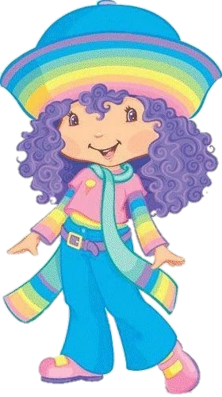 |
Rainbow Sherbet - Rainbow Sherbet is a nautical adventurer, captain of The Rainbow Float, her own ornate paddleboat that voyages on the Punch Bowl Pond. She is knowledgeable about sailing, ships, currents, and the stars. She is a tomboy who loves adventure. She likes to hang out with Blueberry Muffin. She has a pet toucan named Triple Ripple. Rainbow is a talented trumpet player. |
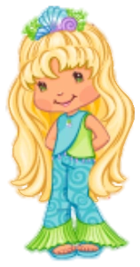 |
Seaberry Delight - Seaberry Delight loves going on beach adventures and finding interesting things. She can be very shy sometimes, but is very kind and loyal to the creatures in the lagoon, and loves to collect seashells. She is soft spoken and sweet to her friends. She is also shown to be a great story-teller and her stories usually have a moral to them. She spends most of her time in the water and because of this she often tends to the seaberry plants and uses the berries to feed her friends, the sea-sweeties. She is definitely an introvert. She lives in the Pink Lagoon and can easily be mistaken as a mermaid if captured with only a glimpse. She can communicate with the sea-sweeties who are the sweet fish who live in the lagoon. |
Pets of StrawberryLand
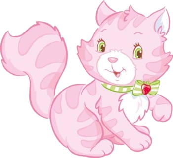 |
Custard - Custard is Strawberry Shortcake's furry, sweet and cute pink cat. Custard has a tomboy-ish personality, and can now speak human language. She loves Strawberry very much, and likes to have days with her whenever she isn't busy. Custard also has a siblingly relationship with Pupcake, and can also translate his barks. Even then, she can get annoyed by Pupcake at times. |
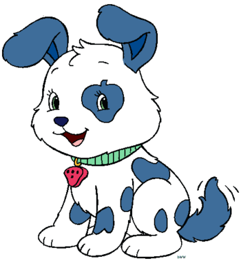 |
Pupcake - Pupcake is Strawberrys Shortcake's dog. He is happy, playful, and energetic who loves Strawberry and has a sibling-like relationship with Custard, although it is more reluctant to the latter as he sometimes annoy her, but can still speaks and translates for him. |
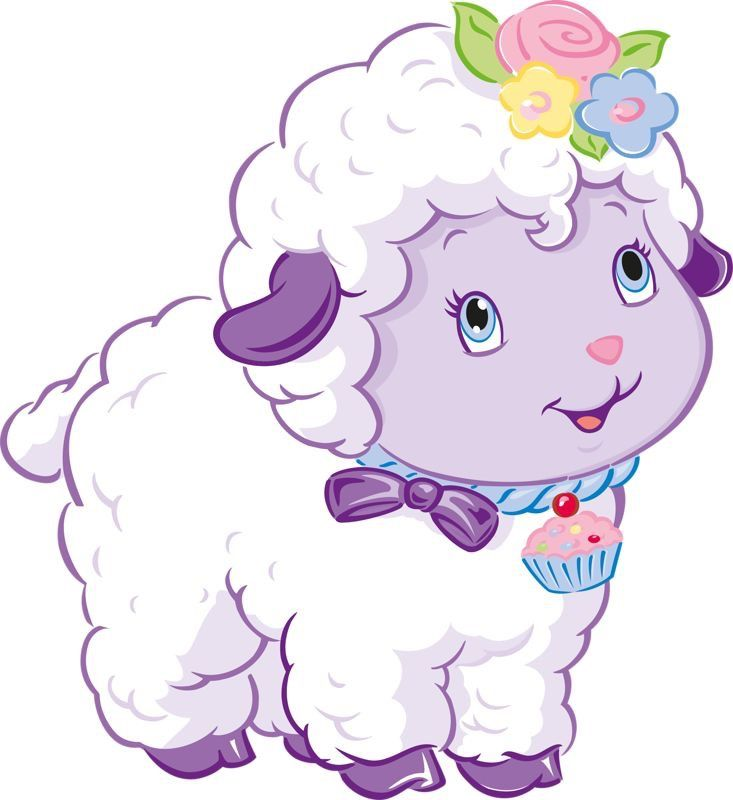 |
Vanilla Icing - Vanilla Icing is Angle Cakes pet lamb. |
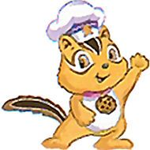 |
Chocolate Chipmunk - Chocolate Chipmunk is Ginger Snap's pet chipmuck. |
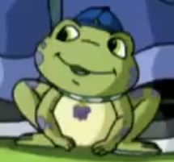 |
Shoefly - Shoefly is Huckleberry Pie's pet frog. |
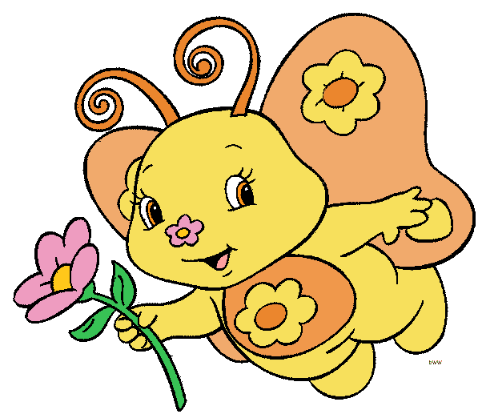 |
Marmalade - Marmalade is Orange Blossom's Butterfly. |
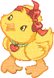 |
Apple Ducklin - Apple Ducklin is Apple Dumplin' pet duck. |
Then & Now: The Evolution of Strawberry Shortcake
Then: In 1977, Strawberry Shortcake resembled a typical rag doll, complete with freckles, a mop of red yarn curls and a bonnet with strawberry prints on it. Strawberry lived with her cat, Custard in a literal strawberry shortcake. Hers was a life of leisure, primarily spent tending to her garden of strawberry vines, exploring nearby lands and snacking on sweets while visiting friends with similar dessert-based names, like Blueberry Muffin and Huckleberry Pie. By 1980, Strawberry Shortcake became enormously populr with girls all over the world, aided in part by the exposeure gained through 'The World of Strawberry Shortcake', the first of her many animated TV speicals.
The Production History of Strawberry Shortcake
The 2003 Series of Strawberry Shortcake continuity that ran from 2003 to 2008. This is also the third and most famous generation of the series.
The Beginning
In the early 2000s, stickers and gift paper were being sold in Toys R Us and Card/Gift Stores with concept art (dated 1998) for a Strawberry Shortcake revival.
Most have her in a dress like in the 80s, but one image has her in jeans and a stripped tee. When American Greetings was asked if new Strawberry Shortcake things were planned, they said no.
Yet the domain Strawberryshortcake.com was purchased in early 2000 to late 2001. She still had the green leggings but her hat was the sunhat we now see in 2003. Her pets were realistic.
Custard had stripes but was orange. Pupcake's spots were black. The art style was similar to the 1980's Holly Hobbie, and more rustic than strawberry usually was.
The 2003 Revival
As with the 1980's Series, the nation of Strawberryland still serves as the primary setting, but is now divided into districts like Cakewalk, Orange Blossom Acers, Huckleberry Briar and Cookie Corners.
Major changes to the characters also took place, with Pupcake and Custard now belonging to Strawberry Shortcake, and Apple Dumplin' being recast as her baby sister. Huckleberry Pie was also given a new pet named Shoofly Frog.
Introduction of Fillies
The continuity introduction of filies to the franchies; each of the fillies are tied down to a character, with the main filly, Honey Pie Poney, being the only one able to talk and have a pet.
However, when Playmates took over the dolls rights from Bandai, the decided to scrap the existing fillies and introduce new ones. However, the removal has not spread beyond the scope of the toy line.
Films
Strawberry Shortcake: The Sweet Dreams Movie, which saw a limited thetrical run and was released on DVD, gained it's share of reputation, for reintroducing the Purple Pieman and Sour Grapes, the villains of the franchise, and their concept of ruling the entire of Strawberryland.
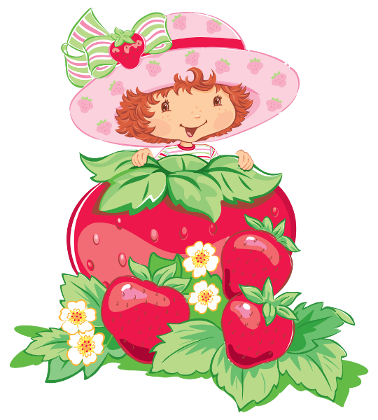